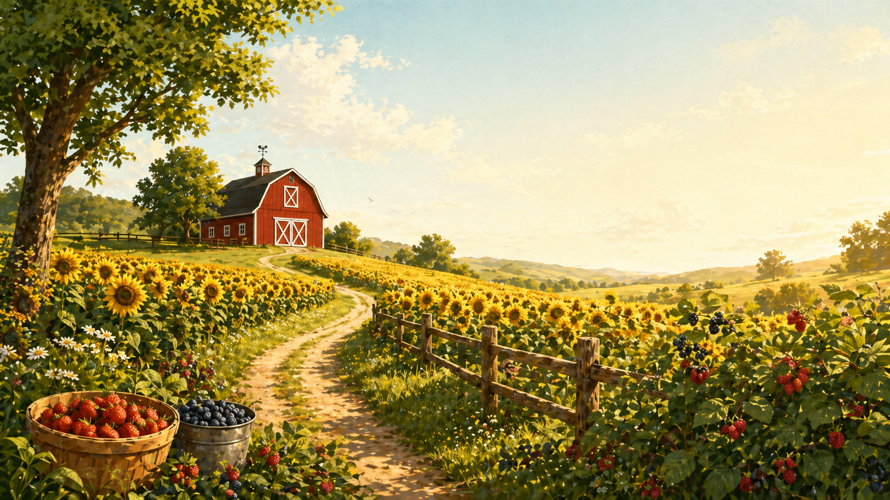

Summer brings fresh vegetables, berry picking, flower blooms, and late meals out.
Tomatoes, zucchini, cucumbers, peppers, corn, and green beans.
Blueberry picking from July through early August each summer.
Second sunflower bloom appears across the farm during late July.
Farm-to-table dinner events on select Saturday evenings with reservations.